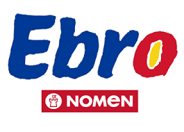

Arrossaires del Ebre
Arrossaires del Ebre som una cooperativa agrícola ubicada al delta de l’Ebre, a Catalunya.
Des de la nostra fundació l’any 1927, ens dediquem al cultiu, processament i comercialització d’arròs,
convertint-nos en una de les principals productores de la regió. La nostra marca més reconeguda és Arròs Nomen,
símbol de qualitat i tradició. Agrupem agricultors locals amb l’objectiu de promoure pràctiques sostenibles i
respectuoses amb el medi ambient, mentre preservem el llegat cultural del cultiu de l’arròs al nostre territori.

Alexander Urbina
Em dic Alexander Urbina, tinc 17 anys, vaig néixer al Perú el 18/1/2008, quan tenia 8 anys vaig vindre a Espanya.
Actualment, estic estudiant un grau mitjà de Sistemes microinformàtics i xarxes i estic al primer any.
Jianwei Zhu
Hola, soc Jianwei Zhu un alumne de SMX1C, actualment amb 18 anys estic cursant el grau mitjà de Sistemes Microinformàtics i Xarxes.
Elegint aquest cicle formatiu pel meu gran interès amb la informàtica, entre elles com la programació i la ciberseguretat.
Ian Reverté
Hola, soc Ian Reverté Vidiella, alumne de primer d'SMX (Sistemes microinformàtics i xarxes) a l'institut de l'Ebre.
Soc un noi de setze anys que ha decidit aquest grau mitjà, ja que m'interessa el món de la informàtica.
La meva intenció és finalitzar aquest CFGM per fer els 2 CFGS que hi ha a aquest centre, que són desenvolupament
d'aplicacions multiplataforma i administració de sistemes informàtics en la xarxa amb perfil professional ciberseguretat.